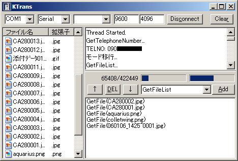
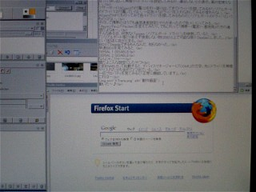

携帯⇔PC通信
市販ソフトは数千円で売られているが、そんなものを買う金は無いのでフリーソフトを使うことにした。
KTransというソフトで、わりと有名なようだ。
ケーブルは最近主流のUSBではなくシリアルケーブル。なぜなら安いから。秋葉原価格400円弱。
※まあUSBだってシリアルには違いないのだが(Universal Serial Bus)、シリアルと言ったら普通は9ピンのRS-232Cだ。
最近秋葉原に行く機会が出来たので早速買ってきてつないだのだが動作しない。
フリーソフトなのでつながる保障はないわけだが、一応動作報告もあるようだし、そもそも「Can't open COM1」とまで言われると何かもっと根本的なところでうまくいっていない気がする。
まずポート番号を確かめてみる。と言ってもよく分からないのでCOM1〜COM9まで全部試してみる。が駄目だった。
一応ソフトを変えてみる。同じ作者のKStoreやケーブルの袋に書いてあったソフトも試してみるが同様の結果。
ケーブルを携帯にさすところで微妙につっかかりがあったのでカッターで恐る恐る削ってみる。が変わらず。冷静に考えれば動作報告があるのだから削る必要などあるはずもない。
ネットで調べてみると、どうやらシリアルポートというのはデバイスマネージャーに表示されてしかるべきもののようだ。しかし自分のところでは出ていない。この辺に原因がありそうだ。
まずはハードウェアの検索をかけたが見つからない。
自力で探し出して無理やりドライバを設定してみるが、適合しないとの表示。案の定使えない。
マザーボード(AOpen)の付属CDを引っ張り出してきてドライバを探してみるがシリアルポートのドライバは付属していない。一応色々なドライバを入れなおしてみるが変わらない。
AOpenのHPにも行ってみて色々ドライバを探してみるもののシリアルポートのドライバというものはない。
平行して携帯のほうでも通信速度設定とやらがあったので色々いじってみる。
「Async/Fax」/「Packet」を変えてみたり。でもこれって「携帯〜(電波)〜基地局」の方の通信だよなぁ…。
そんなある日、何気なく「aopen シリアルポート ドライバ」を検索していると、
「シリアルポート等とりあえず使用しない物はBIOS上で可能な限り Disableにしました。」
という記述に目がとまる。
BIOSでDisableできるもんなんだ、知らなかった。
早速BIOSを見てみると、
SERIAL 1 : DISABLE
SERIAL 2 : DISABLE
なんじゃこりゃ〜!
誰だよこんな設定にしたやつ!
と即ENABLEして起動すると、デバイスマネージャーに「COM1」の文字。先にドライバを無理やり入れた分も含めて2つ出ている。
一応プロパティを見てみると「正常に機能しています」。
これは…

動いた〜♪
長かったなあ、ここまでの道のり…。

↑ためしに携帯で撮って転送してみた。感無量。
まあこんなことに数日かけるのがいやなら市販ソフトを買った方がいい。かけた時間を時給換算したら間違いなく損している。
'07.1.21追記。
ノートPC(のようなもの)とシリアルポートで通信しようとして色々いじっていたところ、携帯の通信がうまくいかなくなってしまった。(しかも肝心のノートPCとの通信も失敗)
例の「Can't open COM1」表示が出る。
後日ドライバを更新したり削除したり色々したところ何とか復活。どうやらデバイスマネージャからシリアルポートを削除すると直るようだ。
しかしさらに後日、また使えなくなった。今度はデバイス削除でもうまくいかず散々悩んだが、ポートの詳細設定からバッファの値を最低にしたところ復活。
ってことは最初デバイス削除で直ったのは偶然?
'07.9/5追記。
上ので治ったと思ったのは勘違いだったらしく、その後もやはり異常が多発。
そこで思いついてシリアルポートの番号を変えてみると嘘のようにおさまった。
要するにノートPC(のようなもの)の通信プログラムがシリアルポートを占領するようだ。
ひどいソフトだなっていうか、なんで常駐してんの?
＜戻る